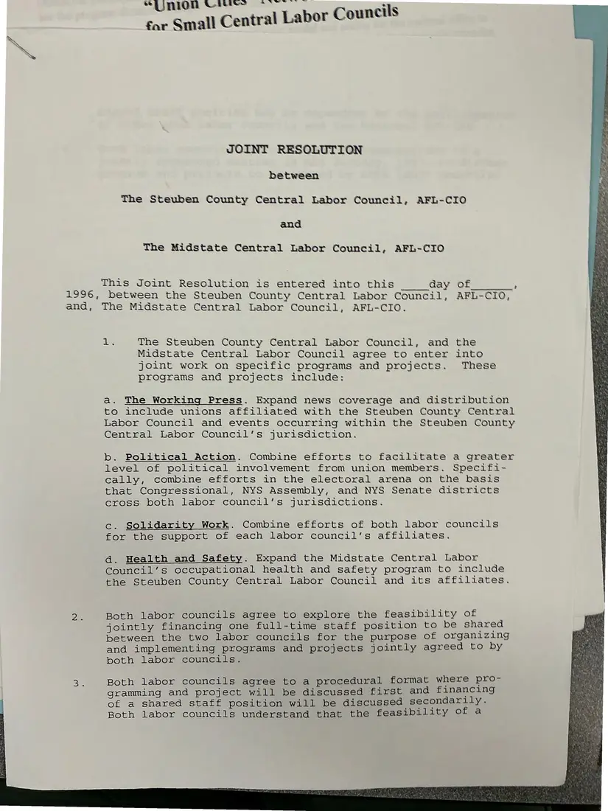
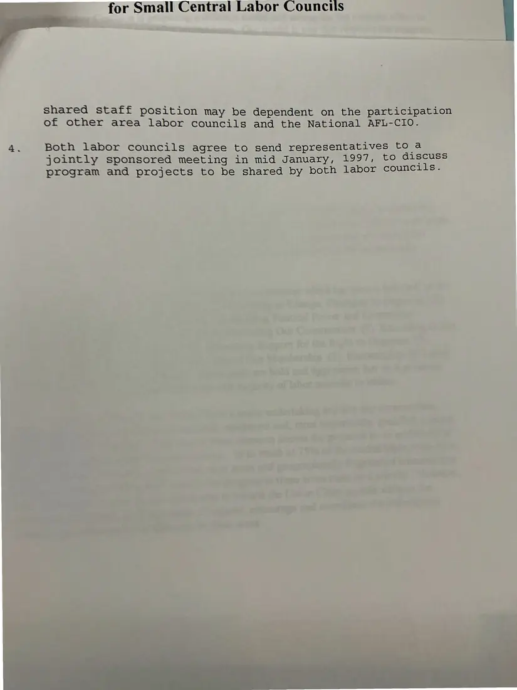

Agreement, 2 pages
Joint resolution between the Steuben County and Midstate central labor councils
1996
A draft agreement for joint work: expanding The Working Press to Steuben, combining political action across congressional and state districts, solidarity support, extending Midstate's health and safety program, and exploring a shared staff position. It plans a joint meeting in January 1997.
Download or cite this itemPages


(open zoom view)Read the page text (machine-read, mostly readable)
This text was generated automatically from the photograph and has not been corrected. The image is the authoritative record.
JOINT RESOLUTION between The Steuben County Central Labor Council, AFL-CIO and The Midstate Central Labor Council, AFL-CIO This Joint Resolution is entered into this Gay of 1996, between the Steuben County Central Labor Council, AFL-CIO, and, The Midstate Central Labor Council, AFL-CIO. Bie i The Steuben County Central Labor Council, and the Midstate Central Labor Council agree to enter into joint work on specific programs and projects. These programs and projects include: a. The Working Press. Expand news coverage and distribution to include unions affiliated with the Steuben County Central Labor Council and events occurring within the Steuben County Central Labor Council’s jurisdiction. b. Political Action. Combine efforts to facilitate a greater level of political involvement from union members. Specifi- cally, combine efforts in the electoral arena on the basis that Congressional, NYS Assembly, and NYS Senate districts cross both labor council’s jurisdictions. c. Solidarity Work. Combine efforts of both labor councils for the support of each labor council’s affiliates. dad. Health and Safety. Expand the Midstate Central Labor Council’s occupational health and safety program to include the Steuben County Central Labor Council and its affiliates. Both labor councils agree to explore the feasibility of jointly financing one full-time staff position to be shared between the two labor councils for the purpose of organizing and implementing programs and projects jointly agreed to by both labor councils. Both labor councils agree to a procedural format where pro- gramming and project will be discussed first and financing of a shared staff position will be discussed secondarily. Both labor councils understand that the feasibility of a


(open zoom view)Read the page text (machine-read, mostly readable)
This text was generated automatically from the photograph and has not been corrected. The image is the authoritative record.
for Small Central Labor Councils shared staff position may be dependent on the participation of other area labor councils and the National AFL-CIO. 4. Both labor councils agree to send representatives to a jointly sponsored meeting in mid January, 1997, to discuss program and projects to be shared by both labor councils.
See something wrong, or recognize a person or event? Send a correction. If you hold rights in this item or think it should not be public, write to the same address.